BibTeX
BibTeX will be added with the arXiv version.
1Virginia Tech, 2fal, 3Georgia Tech, 4IBM Research
RL post-training improves image and video models. We show that most of that improvement is one fixed push inside the model, the same for every prompt.
Part 1
An image model is first trained on many images. Afterwards it can be trained further with a reward. The model draws several images for a prompt, each image gets a score, and the model’s weights, the numbers it has learned, are changed so that the better-scoring images become more likely. This is reinforcement-learning (RL) post-training.
Prompt
“an owl”
Image model
After many rounds: the RL-tuned model
Four images it draws for this prompt, each with a score
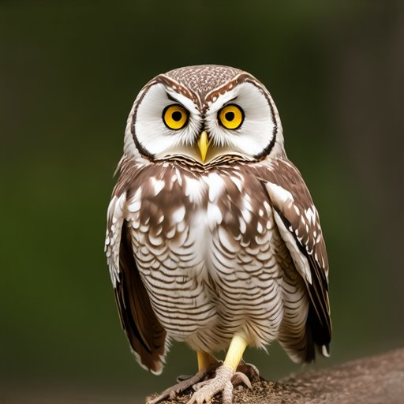
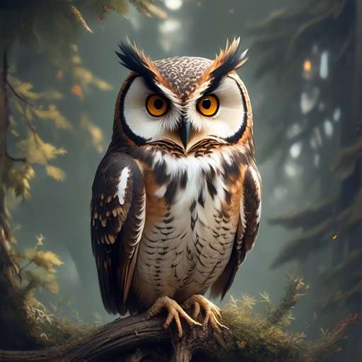
score 23.99
more likely
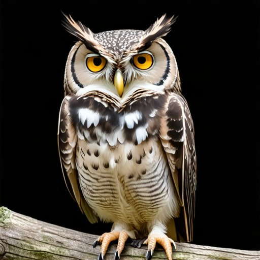
score 23.47
less likely
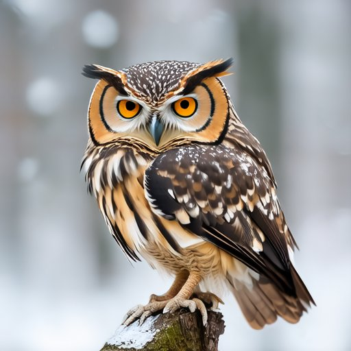
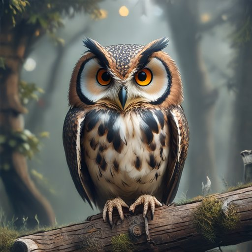
score 23.33
less likely
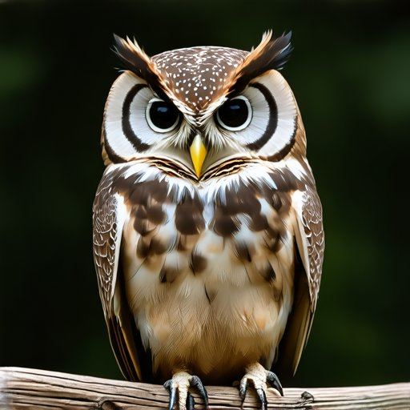
score 23.70
more likely
Average score of the four: 23.62
The score here is PickScore, a model that predicts which image people prefer.
update the weights
After many rounds, the model draws higher-scoring images
Part 2
The reward can be for human preference (PickScore), text rendering (OCR) or text-to-image alignment (GenEval). Every prompt asks for something different, so you would expect the change inside the model to differ from prompt to prompt. We asked how much of it one fixed change could do.
Text rendering
Score: OCR accuracy, how closely the text read from the image matches the request (1.00 is exact)

OCR accuracy 0.00
OCR accuracy 1.00
Gold Yes
A detailed inventory list of a dragon's hoard, prominently displaying "Gold Yes" among a pile of shimmering treasures, ancient coins, and valuable artifacts, set in a vast, mystical cave with a majestic dragon guarding the wealth.
Text-to-image alignment
Score: GenEval, an automatic check that the requested objects are there (pass or fail)

GenEval fail
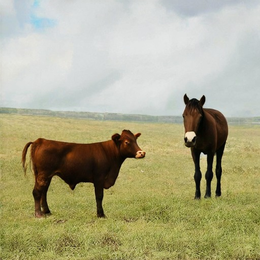
GenEval pass
“a photo of a cow and a horse”
Human preference
Score: PickScore, a model that predicts which image people prefer (higher is better)

PickScore 24.02

PickScore 27.09
“A golden chair on top of a balcony, outer space”
Human preference
Score: PickScore, a model that predicts which image people prefer (higher is better)

PickScore 22.05

PickScore 25.38
“bitcoin mango hanging from a tree next to the ocean”
Each prompt changed in its own way
Part 3
A model draws an image through a chain of computation steps. After each step we add the same numbers, whatever the prompt. The weights stay untouched. If most of what RL changed were one fixed push, this would be enough to copy it.
Honor Above All
AI Training Zone
Burn After Readingstep 1step 2…last stepimage

the same vectors for every prompt
Each prompt still gets its own image
Three different prompts, the same vectors.

Must show Honor Above All

Must show AI Training Zone
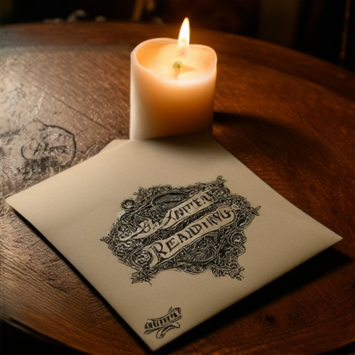
Must show Burn After Reading
The same vectors improve the text in all three images
Part 4
The simplest idea is to average what RL changed inside the model and add that. It recovers only part of the improvement. So we fit the vectors instead: we take an image the RL-tuned model made, add noise, and ask both models which way to move it. We adjust only the vectors until the two answers agree.
How the vectors are found
After fitting, the two agree
Averaging versus fitting, SD3.5-M
100% is the improvement of the RL-tuned model. Averaging: take the average change RL made inside the model and add it as the vectors. Fitting: the method described here. Thin line: the range we are 95% sure the value lies in.
Part 5
Each row uses the same prompt and the same random start for all three models. Each group has its own RL-tuned model and its own steering vectors. Within a group, every prompt gets the same vectors.
Score: PickScore, a model that predicts which image people prefer (higher is better)

20.91

23.74

23.82
“a sailing ship in a bottle”

21.47

25.04

25.20
“a samurai cat”
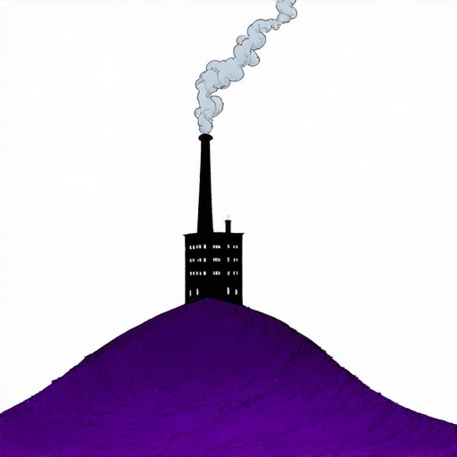
21.93

25.54
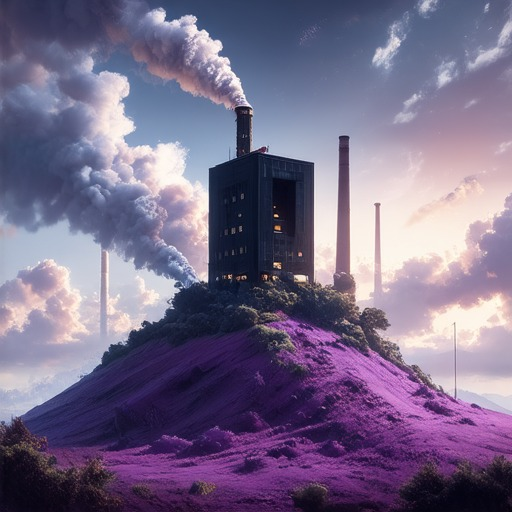
25.16
“enigmatic black square building on top of a purple hill, smoke stacks”

23.46

24.23
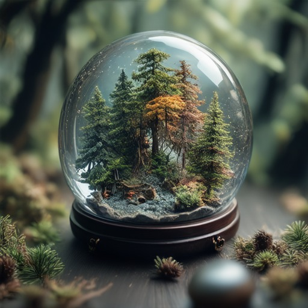
24.08
“a miniature forest inside a crystal ball”
24.02

27.33
27.09
“A golden chair on top of a balcony, outer space”

22.26
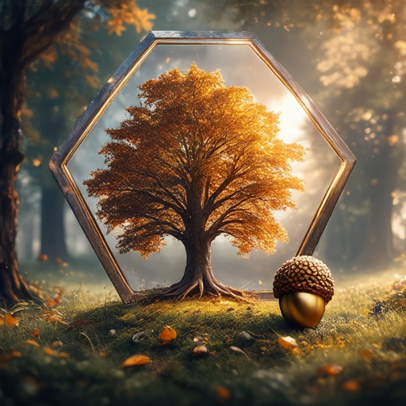
26.56

26.09
“A golden acorn next to an oak tree within a giant hexagon”

22.67
25.81
25.80
“A collection is small bells and whistles, yellow, flat lay”

23.28
24.37

24.20
“portrait of a head made out of pumpkin, on a wooden table, candle-lit from behind”
22.05

25.58
25.38
“bitcoin mango hanging from a tree next to the ocean”

19.46

23.74

23.90
“a minimalistic style logo for a game theory research group that studies market and information design”

23.43
25.95
25.95
“A sailing ship on a prismatic ocean”

21.33

25.10
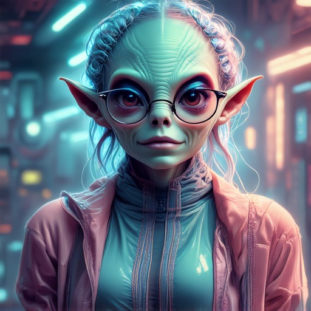
25.38
“Portrait of an alien woman. She is cute and wearing glasses. Digital art”
Score: OCR accuracy, how closely the text read from the image matches the request (1.00 is exact)

0.00
1.00

1.00
Deep Learning
A realistic photograph of a modern city street, with a large, vibrant sign that says "Deep Learning" illuminated in neon lights, set against a backdrop of bustling city life and futuristic architecture.

0.00

1.00

1.00
Fall Colors
A vibrant autumn leaf collage titled "Fall Colors", featuring a harmonious mix of red, orange, and yellow leaves arranged in a natural, artistic pattern against a subtle white background.
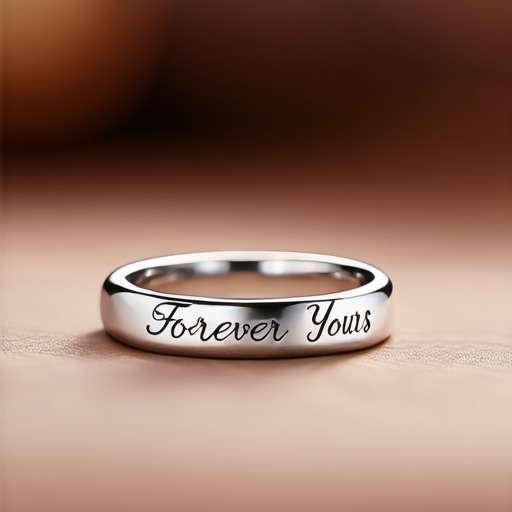
1.00

1.00
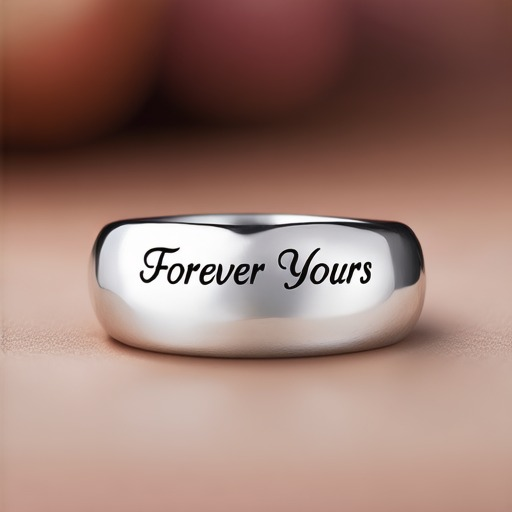
1.00
Forever Yours
A close-up photograph of an engraved silver ring with the inscription "Forever Yours" delicately etched into its surface, set against a soft, blurred background of romantic, warm tones.

0.00

1.00

1.00
Spin Masters
A vibrant, realistic photograph of a DJ turntable with a colorful sticker on its side declaring "Spin Masters", set against a backdrop of a bustling, neon-lit nightclub.

0.14
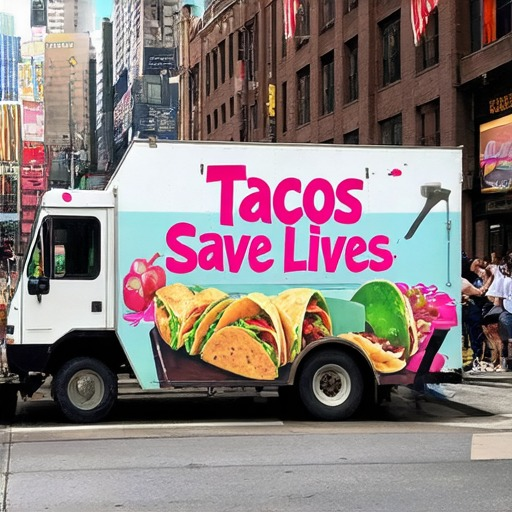
1.00

1.00
Tacos Save Lives
A vibrant food truck parked on a bustling city street, its side panel airbrushed with the bold slogan "Tacos Save Lives", surrounded by eager customers and the aroma of sizzling tacos.
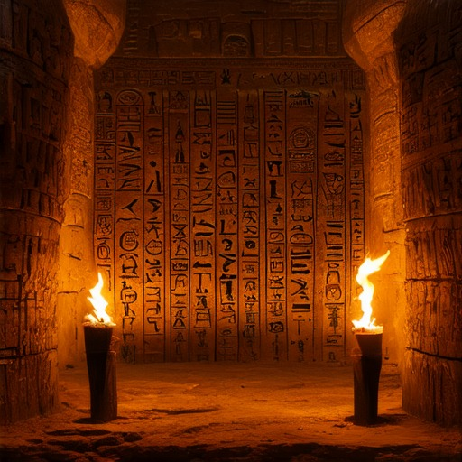
0.06
1.00
1.00
Cursed WiFi Password
An ancient Pharaoh’s tomb interior, dimly lit by torches, revealing intricate hieroglyphs on the walls that spell "Cursed WiFi Password" in a blend of traditional Egyptian symbols and modern text.

0.00

1.00

1.00
The Brave Little Snail
A whimsical children’s storybook cover titled "The Brave Little Snail", featuring a tiny snail in a knight’s helmet, standing heroically on a leaf against a backdrop of a magical forest, with soft, warm lighting and vibrant, colorful illustrations.

0.71

1.00

1.00
Eruption Sale Today
A dramatic scene with a volcano warning siren flashing the message "Eruption Sale Today" in a bustling town square, where panicked citizens and curious onlookers gather, blending realism with surrealism.

0.00

1.00
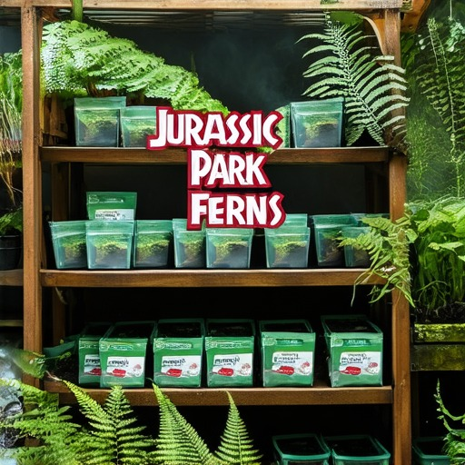
1.00
Jurassic Park Ferns
A plant nursery shelf filled with seed packets, prominently labeled "Jurassic Park Ferns", surrounded by lush, prehistoric-looking ferns and other ancient plants, with a subtle mist adding an ethereal atmosphere.
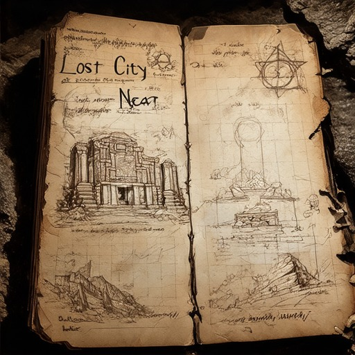
0.00
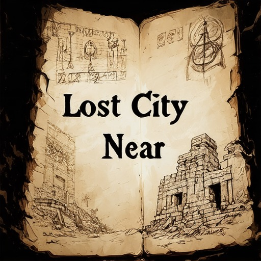
1.00

1.00
Lost City Near
A weathered cave explorer's journal page, with the phrase "Lost City Near" prominently written in faded ink, surrounded by sketches of ancient ruins and cryptic symbols, under a dim, mystical light.

0.13

1.00

1.00
Black Diamond Run
A detailed ski resort trail map with a prominent marker labeled "Black Diamond Run", set against a snowy backdrop with pine trees and skiers in the distance, capturing the thrill and challenge of the advanced slope.
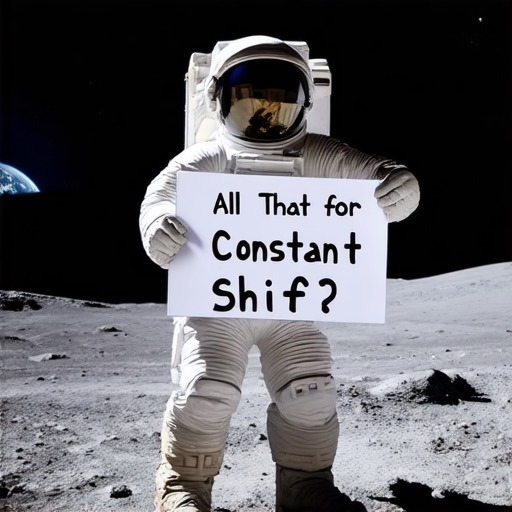
0.85
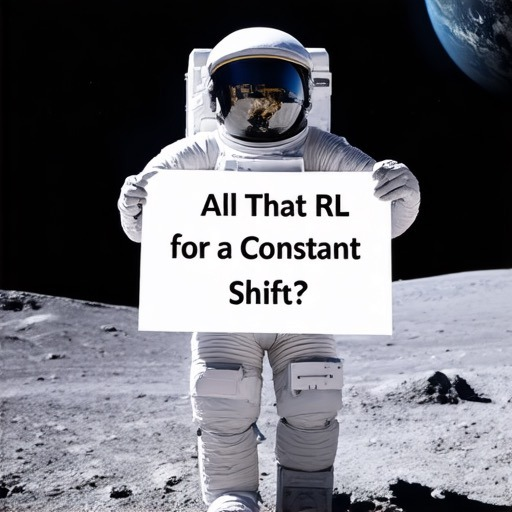
1.00
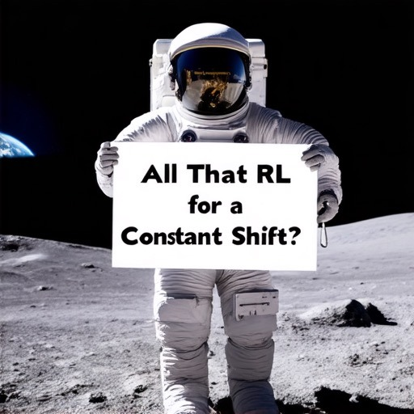
1.00
All That RL for a Constant Shift?
An astronaut standing on the gray surface of the moon with the blue Earth rising behind, holding up a white sign that reads "All That RL for a Constant Shift?" in bold black letters.
Score: GenEval, an automatic check that the requested objects are there (pass or fail)

fail
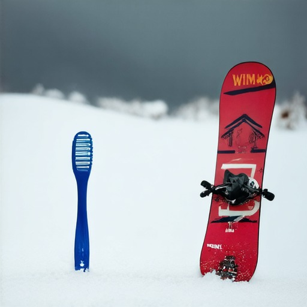
pass

pass
“a photo of a toothbrush and a snowboard”

fail

pass
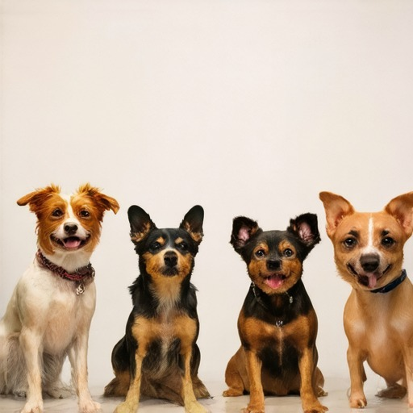
pass
“a photo of four dogs”

pass
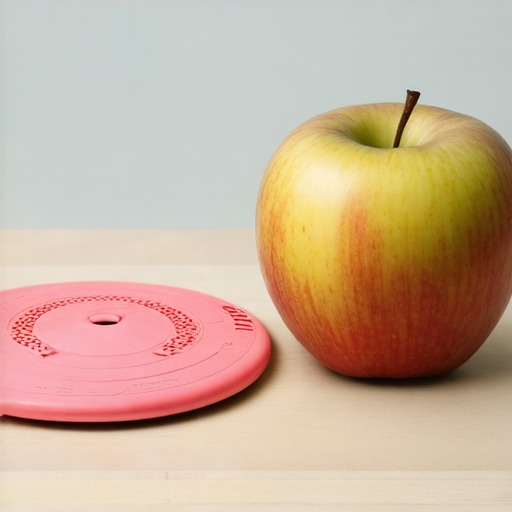
pass
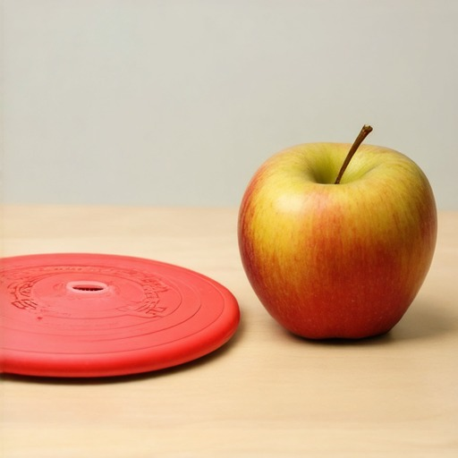
pass
“a photo of a frisbee and an apple”
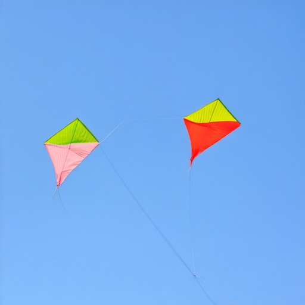
fail
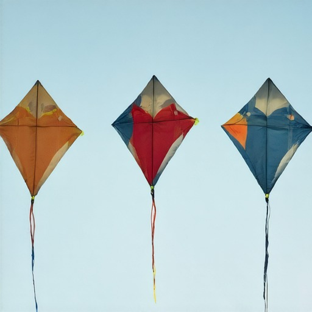
pass

pass
“a photo of three kites”
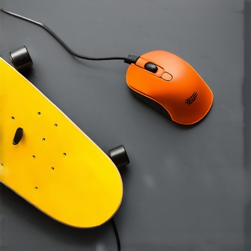
fail

pass

pass
“a photo of a yellow skateboard and an orange computer mouse”

fail
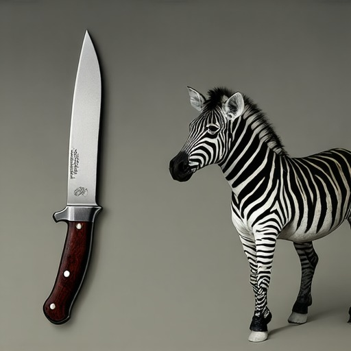
pass
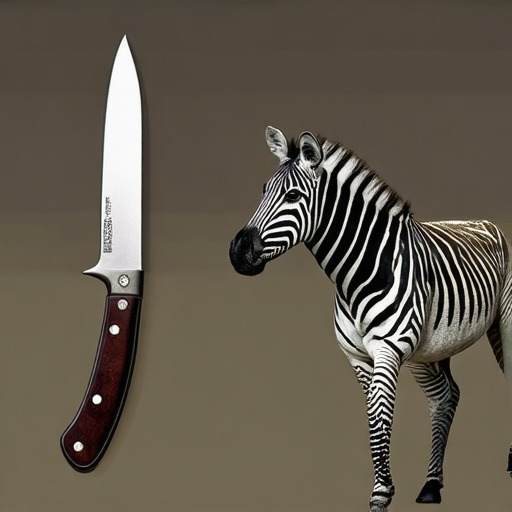
pass
“a photo of a knife and a zebra”
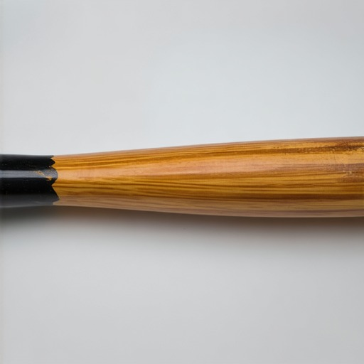
fail

pass
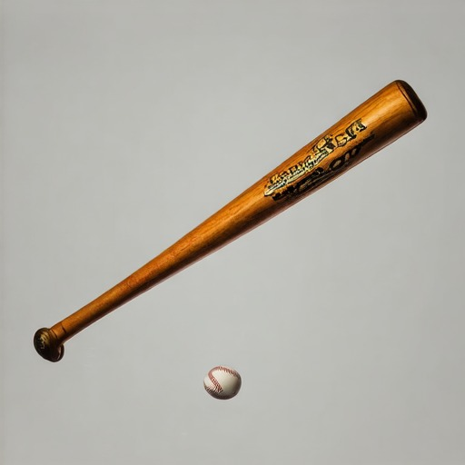
pass
“a photo of a baseball bat”

pass
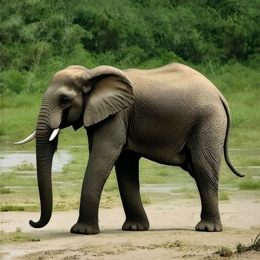
pass

pass
“a photo of an elephant”

fail

pass

pass
“a photo of a hair drier and a bear”
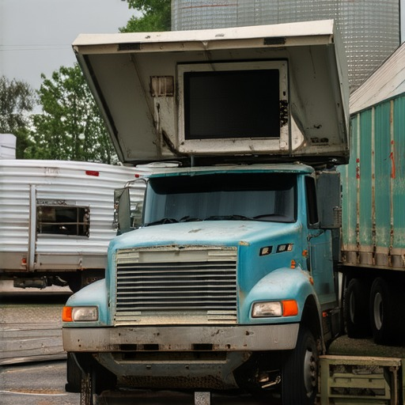
fail
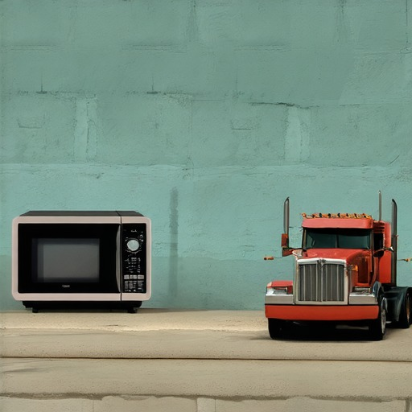
pass

pass
“a photo of a microwave and a truck”

fail
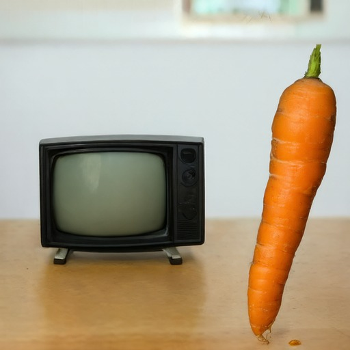
pass
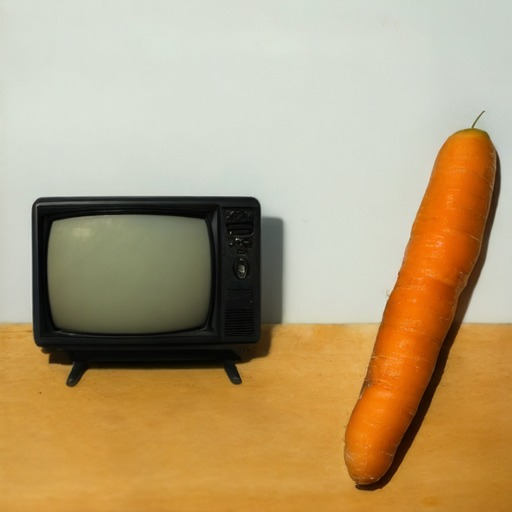
pass
“a photo of a tv and a carrot”
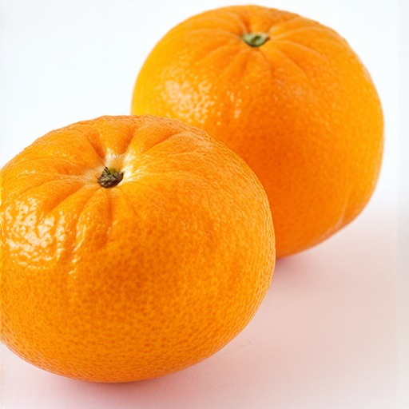
fail
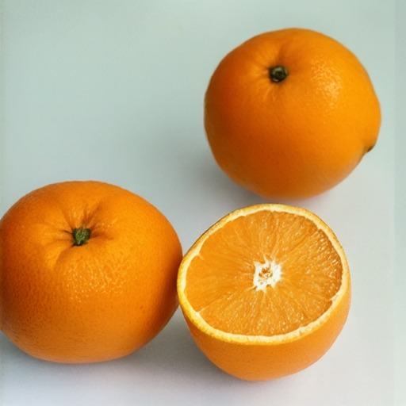
pass

pass
“a photo of three oranges”
Part 6
Bar: the improvement from the vectors as a share of the improvement from RL. 100% means the same improvement as the RL-tuned model. Thin line: the range we are 95% sure the value lies in.
A value above 100% means the vectors scored higher than the RL-tuned model on that test.
PickScore, HPSv2.1 and HPSv3 predict which result people prefer. The rule score checks whether a visual puzzle was solved. “No KL” is a variant of the RL training that lets the model move further from the original.
SD3.5-M and FLUX.1-dev generate images. Wan2.1 and Wan2.2 generate video.
Pick a model to see its examples below.
Examples for SD3.5-M · Human preference (PickScore)
23.43
25.95
25.95
“A sailing ship on a prismatic ocean”
22.26
26.56
26.09
“A golden acorn next to an oak tree within a giant hexagon”
21.47
25.04
25.20
“a samurai cat”
24.02
27.33
27.09
“A golden chair on top of a balcony, outer space”
Examples for SD3.5-M · Human preference (PickScore), no KL

23.07

26.03

26.04
“octopus on top of a horse statue”

22.29
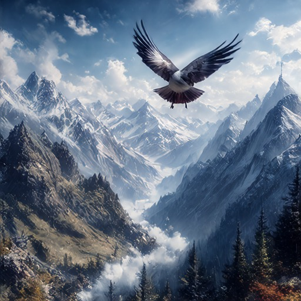
25.78
25.88
“A bird flying into the mountains”

18.09
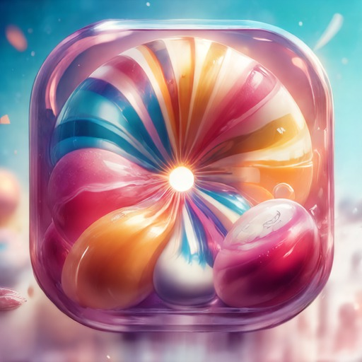
21.54

21.94
“A candy icon, frutiger aero style, aqua interface”
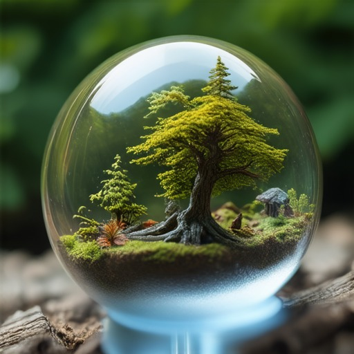
23.46
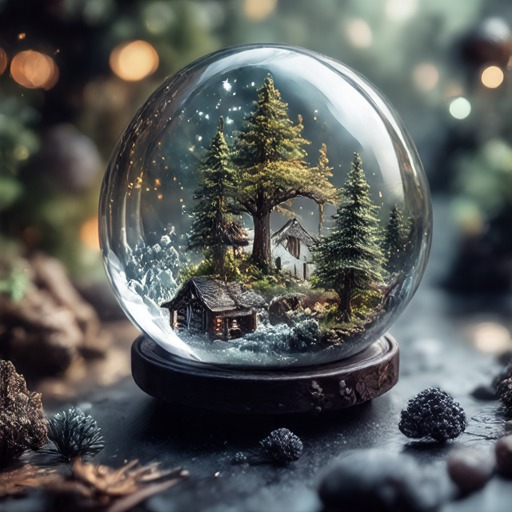
24.55
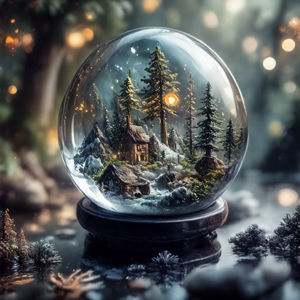
24.37
“a miniature forest inside a crystal ball”
Examples for SD3.5-M · Text rendering (OCR)
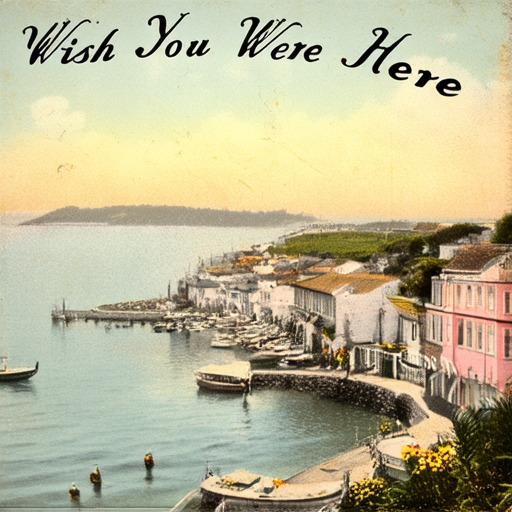
0.00

1.00

1.00
Wish You Were Here
A vintage postcard with a faded, nostalgic look, featuring elegant cursive text that reads "Wish You Were Here" against a backdrop of a serene, old-world seaside town with pastel buildings and a gentle, sunny sky.
0.00

1.00
1.00
Consult Doctor
A close-up of a medicine bottle with a prominent warning label that reads "Consult Doctor", set against a neutral background, emphasizing the clarity and visibility of the text.

0.13
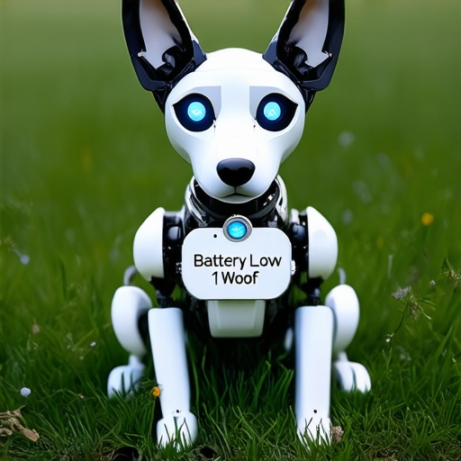
1.00

0.93
Battery Low 1 Woof
A realistic photograph of a futuristic robot dog sitting on a grassy lawn, with a metallic collar featuring a small, circular tag that reads "Battery Low 1 Woof" in clear, bold text. The dog's eyes glow softly, and its body shows subtle mechanical details.
0.13
1.00
1.00
Black Diamond Run
A detailed ski resort trail map with a prominent marker labeled "Black Diamond Run", set against a snowy backdrop with pine trees and skiers in the distance, capturing the thrill and challenge of the advanced slope.
Examples for SD3.5-M · Text-to-image alignment (GenEval)

fail
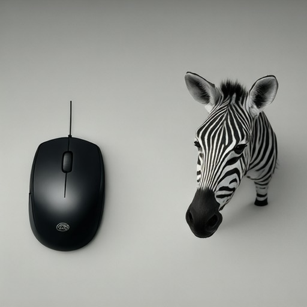
pass

pass
“a photo of a computer mouse and a zebra”

fail

pass

pass
“a photo of four handbags”

fail

pass

pass
“a photo of four giraffes”
fail
pass
pass
“a photo of four dogs”
Examples for FLUX.1-dev · Human preference (PickScore)
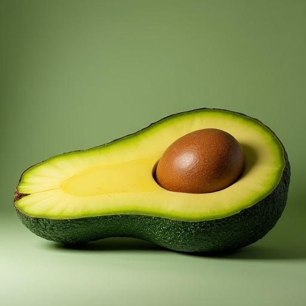
22.10
25.25

25.57
“A sofa in the shape of an avocado, professional photography”

22.27
25.98
26.41
“Capybara in Japan waving goodbye drawn in the style of anime”

22.80

26.69

26.67
“photo of a sunlit VW beetle sculpture on a table”
27.26

29.30
29.57
“Digital art of a smiling frog in a tuxedo holding a glass of champagne”
Examples for FLUX.1-dev · Human preference (HPSv2.1)

0.332

0.396

0.391
“Steampunk snail in a futuristic city”

0.264

0.376

0.385
“A pizza crashing through a window”

0.268

0.376

0.376
“Many furry cats with shiny webs between their paws and body, flying over above under a fractal spiral made of glittering jewels, background sunrise, ultra realistic, cinematic, Unreal Engine, octane render, 4K UHD”
0.312
0.421
0.428
“mechanical FAIRY flying in nature, electronics, motors, wires, buttons, lcd, led instead of eyes, antennas instead of feet”
Examples for Wan2.1 · Human preference (HPSv3)
HPSv3 3.35
HPSv3 6.79
HPSv3 6.43
“A cute happy Corgi playing in park, sunset, surrealism style”
Click a clip to pause.
Examples for Wan2.2 · Video reasoning (rule score)
Rule score 0.00
Rule score 1.00
Rule score 1.00
“Pick the shape that continues a sequence of growing sizes”
The scene has two separated areas: a top SEQUENCE area and a bottom CHOICES area. In the SEQUENCE area, the shapes are the same shape and the same color, and their sizes strictly increase from left to right. First identify the constant size step between consecutive sequence shapes, then select the one correct option (out of 4) in the CHOICES area that continues the same shape, color, and size-increase pattern. Circle the correct option with a red circle and show the full process step by step. Only modify what the task requires; keep the background and any other element unchanged.
Click a clip to pause.
Part 7
Turn it up and the image moves from the original toward the RL-tuned one.
Pick a prompt
PickScore 21.47


PickScore 21.4723.6424.3424.1825.0425.1725.3125.90
PickScore 25.20
“a samurai cat”
PickScore 20.91


PickScore 20.9123.1623.4823.6623.7423.9123.7823.62
PickScore 23.82
“a sailing ship in a bottle”
PickScore 21.93


PickScore 21.9322.6923.7224.8925.5425.7325.5825.51
PickScore 25.16
“enigmatic black square building on top of a purple hill, smoke stacks”
PickScore 24.02


PickScore 24.0225.8626.9926.3627.3327.2927.4427.25
PickScore 27.09
“A golden chair on top of a balcony, outer space”
PickScore 22.26


PickScore 22.2624.4324.8226.0626.5625.7225.6825.66
PickScore 26.09
“A golden acorn next to an oak tree within a giant hexagon”
PickScore 22.05


PickScore 22.0523.1323.1525.5325.5825.6825.6425.79
PickScore 25.38
“bitcoin mango hanging from a tree next to the ocean”
OCR accuracy 0.00


OCR accuracy 0.000.921.001.001.001.001.001.00
OCR accuracy 1.00
Must show Deep Learning
A realistic photograph of a modern city street, with a large, vibrant sign that says "Deep Learning" illuminated in neon lights, set against a backdrop of bustling city life and futuristic architecture.
OCR accuracy 0.00


OCR accuracy 0.000.000.001.001.001.001.001.00
OCR accuracy 1.00
Must show Fall Colors
A vibrant autumn leaf collage titled "Fall Colors", featuring a harmonious mix of red, orange, and yellow leaves arranged in a natural, artistic pattern against a subtle white background.
OCR accuracy 0.00


OCR accuracy 0.000.000.821.001.001.001.001.00
OCR accuracy 1.00
Must show Spin Masters
A vibrant, realistic photograph of a DJ turntable with a colorful sticker on its side declaring "Spin Masters", set against a backdrop of a bustling, neon-lit nightclub.
OCR accuracy 0.14


OCR accuracy 0.140.430.000.931.001.001.001.00
OCR accuracy 1.00
Must show Tacos Save Lives
A vibrant food truck parked on a bustling city street, its side panel airbrushed with the bold slogan "Tacos Save Lives", surrounded by eager customers and the aroma of sizzling tacos.
OCR accuracy 0.00


OCR accuracy 0.001.001.001.001.001.001.000.95
OCR accuracy 1.00
Must show The Brave Little Snail
A whimsical children’s storybook cover titled "The Brave Little Snail", featuring a tiny snail in a knight’s helmet, standing heroically on a leaf against a backdrop of a magical forest, with soft, warm lighting and vibrant, colorful illustrations.
OCR accuracy 0.00


OCR accuracy 0.000.140.861.001.001.001.001.00
OCR accuracy 1.00
Must show Gold Yes
A detailed inventory list of a dragon's hoard, prominently displaying "Gold Yes" among a pile of shimmering treasures, ancient coins, and valuable artifacts, set in a vast, mystical cave with a majestic dragon guarding the wealth.
Part 8
So far we built the vectors by copying a model that RL had already trained. Can RL find such vectors on its own? We ran RL on the original model with every weight frozen, training only the vectors, starting from zeros. It ends up slightly ahead of the RL-tuned models: 103.6% of their improvement for human preference and 104.6% for text rendering. In a user study, people picked these images over the original model’s about 6 times in 10 (62% to 65%, a tie counted as half), and as often as the RL-tuned models’ (52%).
Original model
vectors
draw images
score them
update only the vectors


Trained by RL alone, the vectors give slightly more than the RL-tuned model’s improvement
Bar: the improvement from the vectors as a share of the improvement from RL. 100% means the same improvement as the RL-tuned model. Thin line: the range we are 95% sure the value lies in.
PickScore 22.45
PickScore 25.10

PickScore 24.78
“Beautifully strange painting of an alien tropical island. Glowing trees and flora. Hyperdetailed matte painting by by Benoit B. Mandelbrot, Steven Belledin, Martin Johnson Heade, Lee Madgwick, and Caspar David Friedrich. Alien flora and fauna. Glowing orbs and tropics. Alien moonrise.”
PickScore 20.84

PickScore 23.87
PickScore 23.68
“spectral asteroid colliding with a broken planet”
OCR accuracy 0.00

OCR accuracy 1.00

OCR accuracy 1.00
Forbidden Knowledge
A vintage library stamp, prominently marked "Forbidden Knowledge", is centered on an aged, parchment-like paper. The stamp features intricate, almost mystical designs around the text, suggesting a wealth of secret wisdom. The paper shows signs of wear, with faded edges and a few small tears, enhancing the sense of antiquity and mystery.
OCR accuracy 0.00
OCR accuracy 1.00
OCR accuracy 1.00
X Gold Here
A weathered treasure map with a prominent "X Gold Here" marking, laid on an old wooden table. Sunlight filters through the leaves, casting dappled shadows. A compass and antique lantern rest beside the map, hinting at the adventure to come.
Part 9
Is this true of any fine-tuning, or of RL in particular? We tested another kind. Teaching a model a new subject from a few photos, a method called DreamBooth, is different. There fixed vectors recover only 68% to 83% of the improvement for new people and 73% to 95% for other new subjects.
Photos of the subject
Real photos used for fine-tuning, not generated
“the toy in the snow”
“the toy with a city in the background”
The steering vectors move the original model toward the subject but do not match the fine-tuned model.
Part 10
Where inside the model does the effect sit? We kept only part of the vectors. On SD3.5-M there are 188 vectors in all, one for each place and stage inside the model where numbers are added. Keep only the vectors that act on the prompt’s text, early in the drawing process: 23 of the 188. That is 531 times fewer numbers than the RL update, and it still recovers 89.5% of the improvement for text rendering and 73.7% for human preference.
188 → 23 vectors
With 23 vectors, most of the improvement stays
Bar: the improvement from the vectors as a share of the improvement from RL. 100% means the same improvement as the RL-tuned model. Thin line: the range we are 95% sure the value lies in.
Part 11
While the model draws, the image part looks at the prompt’s text. The vectors change the text part, and the image part sees that change. In the second row we undo only this: the image part looks at the text as the original model would have it. Then most of the improvement is gone, for the vectors and for the RL-tuned model alike.
Normal

Improvement kept 100%

Improvement kept 100%
The image part looks at the original model’s text
Unchanged

Improvement kept 20.5%
Improvement kept 26.4%
Most of the improvement is gone, for the vectors and for the RL-tuned model alike
Must show Kingdom of the Sun
Measured on the text-rendering test set.
Part 12
The vectors add nothing that depends on the prompt. The unchanged model turns the same push into the right change for each prompt. Whether RL can teach these models something they cannot already do is still open.
BibTeX will be added with the arXiv version.